Derivative of a vector-valued function
Vogliamo ora generalizzare il convetto di derivata a una funzione, r: ℝ ⟶ ℝn.La definizione usuasle, come limite del rapporto incrementale, ha perfettamente senso:
Si noti che il rapporto incrementale è il quoziente tra un vettore e uno scalare (il che ha senso), quindi è un vettore; il limite va inteso rispetto alla distanza in ℝm.
Ricordando poi che i limiti di funzioni a valori vettoriali si calcolano componente per componente, vediamo che l'espressione precedente è uguale a:
So we conclude that
r'(t0) = (r'1(t0), r'2(t0), ..., r'm(t0)) 2.4.1
Ossia la derivata di una funzione a valori vettoriali si fa componente per componente: il vettore derivato è il vettore delle derivate delle componenti.
Esempio 2.4.2. Per l'ellisse r(t) = (2 cos t, 3 sin t), abbiamo:
r(t) = (−2 sin t, 3 cos t) ■
Mentre l'osservazione precedente è utile per il calcolo effettivo del vettore derivato, per c apire il significato cinematicodel vettore derivato è meglio ragionare sul limite del rapporto incrementale dei vettori, anziché sulle singole componenti. Il vettore r(t0 + h) − r(t0) rappresenta lo spostamento del punto mobile dall'istante t0 + h. Ne segue che il limite del rapporto incrementale rappresenta cinematicamente il vettore velocità istantaneea del moto, che risulta tangente alla curva.
Si può definire anche la velocità scalare
v(t) = |r'(t)|
Il vettore velocità istantanea individua effettivamente una direzione (e quindi ha il significato di vettore tangente) solo quando le sue componenti non sono tutte nulle. Questo motiva la prossima definizione:
Definizione 2.4.3. Si dice arco di curva reasgolare un arco di curva r: I ⟶ ℝm (con I intervallo in ℝ) dotato per ogni t di vettore tangente non nullo: per ogni t ∈ I ∃r'(t) ≠ 0.
Per le curve regolare è ben definito il versore tangente.
Esempio 2.4.4. L'ellisse r(t) = (2cos t, 3sint), t ∈ [0,2π] è regolare, infatti r'(t) = (−2sin t, 3 cos t) ≠ (0,0) for every t. The tangent versor is
Example 2.4.5. L'astroide
non è regolare in quanto r'(θ) = {−3(cos θ)2, sin(θ)2, 3(sin(θ))2 è zero per θ = kπ/2. Difatti la curva in figura presenta delle cupsidi nei punti corrispondenti. ■
Regole di calcolo delle derivate
Dalla definizione (2.4.1) di derivata di una funzione r: ℝ ⟶ ℝm e dalla proprietà (2.4.1) seguono subito le consuete regole di calcolo delle derivta di funzioni vettoriali:
se u,v>: ℝ ⟶ ℝm sono derivabili, allora
(u + v)' = u' + v';
(cu)' = cu'.if φ: ℝ ⟶ ℝ è una funzione derivabile
[u(φ(t))]' = u'(φ(t)) φ'(t)
per il prodotto scalare di due funzioni vettoriali vale anche la seguente, basata sulla definizione di prodotto scalare in ℝm
(u ⋅ v)' = u' ⋅ v + u ⋅ v';
L'ultima proprietà ha un interessante significato nel caso u = v. Ricordando che |u|2 = u ⋅ u. Supponiamo allora che u: ℝ ⟶ ℝm sia una funzione vettoriale di modulo costante, [u(t)] = c per ogni t; allora u ⋅ u = c2, da cui derivando si ha:
u' ⋅ u = u ⋅ u' = 2u' ⋅ u = 0.
che ha il seguente significato cinematico: se una funzione vettoriale ha modulo costante, è sempre ortogonale al suo vettore velocità. Ad es.; se un punto materiale si muove con velocità di modulo costante, i vettori velocità u e accelerazione u' sono ortogonali as ogni istante.
Equazioni in fomra polare
Una forma particoalre che possono avere le equazioni parametriche di una curva piana è quella polare. L'equzione (singola):
ρ = f(θ)
è una stenografia che sta a indicare (ponendo x = ρ cos θ, y = ρ sin θ)
Archimede Spiral has equation
ρ = Aθ, θ ∈ [0, +∞]
with A a positive constant. The previous equation is equivalent to the parametric equations
Il vettore tangente è r'(θ) = A(cos θ − θ sin &tehta;, sin &tehta; + θ cos θ) e non si annulla mai, ome si vede calcolando il modulo del vettore:
v(θ) = |r'(θ)| = A √1(1 + θ2) > 0, ∀θ
Coniche in forma polare
Anche le coniche (paroble, ellissi, iperboli), ammettono un'equazione in forma poalre. Per arrivarci, ricordiamo uno dei modi in cui è possiible definire queste curve come opportuni luoghi geometrici. Nel piano x,y, sia d la retta verticale di equazione x = −p, e sia ε > 0 un numero fissato. Il luogo dei punti P(x,y) che soddisfano la condizione
si dice conica di eccentricità ε, con direttrice d e fuoco l'origine. Poiché
distance of P from the focus = ρ
and
distance of P from the d = p + ρcos θ
risulta
da cui si ricava l'equazione polare della conica:
ρ = ερ / (1-ε cos θ) (2.4.6)
Si vede che questa è l'equazione di
un'ellisse se ε < 1
una parabola se ε = 1
un'iperbole se ε > 1
Ad es., nel caso ε > 1, gli asintoti dell'iperbole sono le rette passanti per l'origine con pendenza θ tale da annullare il denominatore (1 − εθ).
Per ε ⟶ 0 e p = R/ε si trova l'equazione della circonferenza
p = R
Invece, per i>ε ⟶ ∞, si trova
ρ = −p/cos θ
che è l'equazione di una retta.
Nello studio del moto dii un corpo soggetto ad attrazione gravitazionale centrale (ad es. il moto di un pianeta intorno al sole), si arriva a dimostrare, risolvendo le opportune equazioni differenziali, che il corpo si muove lungo una curva di equazione polare di tipo (2.4.6), da cui si riconosce che le orbite sono curve coniche (nel caso dei pianeti, ellissi).